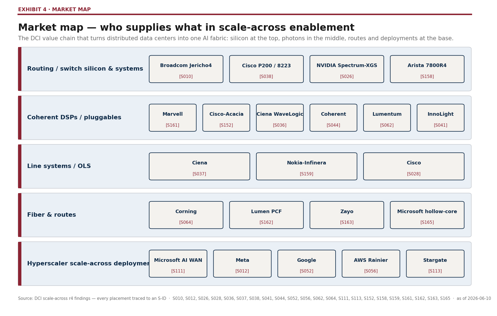
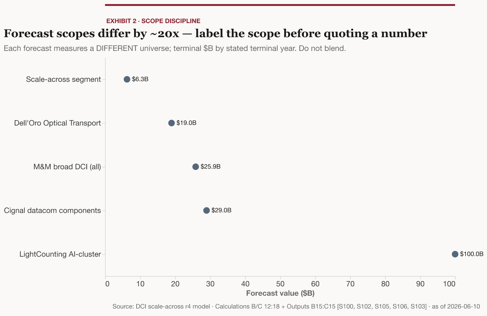
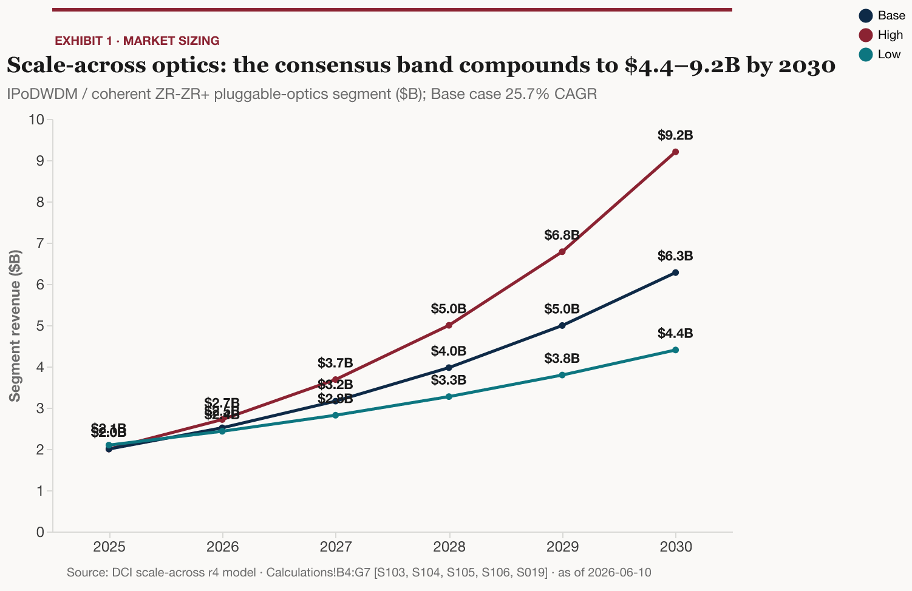
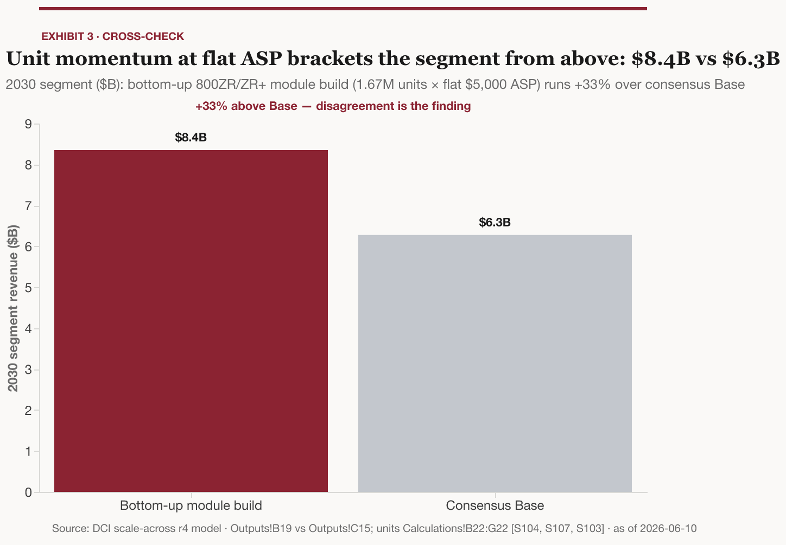

Primer · 2026-06-10 · Model: /Users/johnhendren/Desktop/Projects/vault/kb/outputs/models/2026-06-10-dci-scale-across-r4.xlsx (scenario: Base)
Who this is for and what it answers. A smart-finance reader preparing for vendor calls, earnings season, or diligence in AI networking — oriented to nothing specifically. The anchor question: what is “scale-across” data-center interconnect, who supplies it, and how big is the enablement market actually likely to be? After reading, you should be able to place any quoted market number in its correct scope, name the suppliers at each layer of the stack, and know the two variables that move the 2030 band.
Scale-across is the third tier of AI networking — linking whole data centers so distributed sites train as one machine — and it exists because power, not silicon, now caps how big a single site can get.
The vocabulary stack has three rungs. Scale-up is networking within a rack — connecting GPUs into one memory-coherent unit over copper, optimized for latency. Scale-out is networking between racks within a data center — connecting thousands of accelerators over a switched fabric, optimized for jitter and congestion 1. Scale-across is the new rung: connecting entire data centers — buildings, campuses, or sites hundreds of kilometers apart — so they behave as a single training cluster. NVIDIA coined the term at Hot Chips in August 2025, positioning it as “a third pillar of AI computing beyond scale-up and scale-out” 2, with Jensen Huang framing it as linking data centers “across cities, nations and continents” into giga-scale AI super-factories 2. IDC has since codified a definition — geographically dispersed data centers operating as a unified system for AI workloads, leveraging advanced DCI (data-center interconnect — the optical links that carry traffic between facilities) technologies 3. And the concept is production reality, not roadmap: Meta defines scale-across in its own engineering literature as training expanded across multiple buildings over cross-building networks, and runs 100K-GPU jobs that span buildings today 4 — so the tier exists in shipping infrastructure regardless of what anyone calls it.
One caution on the label itself: it is investable only as a taxonomy, not as a market boundary. NVIDIA, Cisco, Arista and Marvell all market “scale-across” by name 2 5 6 7 — trade press credits NVIDIA, Broadcom and Cisco jointly with creating the category 8 — while Broadcom ships the identical cross-data-center tier, its Jericho4 fabric router positioned as covering “within a rack, across racks, and across data centers,” while not always using the label itself 9. We read scale-across as a vendor-promoted taxonomy that is gaining analyst recognition, not settled industry vocabulary; the architectural tier is real, the boundary is not — which is one reason every market-size number in this primer carries an explicit scope label.
Why the tier exists at all is a power story. NVIDIA’s launch framing was that data centers are “reaching critical thresholds in power and capacity,” and that distributed sites previously could not be combined because of latency and jitter 2. Cisco’s hardware lead says the same thing more bluntly: power consumption has become the primary limiting factor on AI scaling, making scale-up and scale-out alone insufficient 5. Microsoft’s optical architect quantifies it — traditional cloud facilities run 50–300 MW, while AI clusters are pushing toward 1–5 GW, and the uneven geography of US power makes concentrating that capacity in one place increasingly infeasible 10. Three independent voices — a GPU vendor, a router vendor, and a hyperscaler — converge on the same constraint, which means multi-site campuses are a permanent architecture rather than a stopgap, and the demand for inter-data-center bandwidth is structural.
How much bandwidth? Cisco estimates a scale-across network needs roughly 14x the bandwidth of a traditional WAN interconnect, because it bridges high-bandwidth scale-out fabrics rather than connecting data centers to end users 11 5. Marvell independently projects aggregate scale-across bandwidth requirements at more than 10x today’s front-end DCI networks 12. Both are vendor projections — and the two ratios use different denominators, Cisco’s 14x against traditional WAN interconnect 11 and Marvell’s >10x against front-end DCI 12, so they agree on order of magnitude rather than on a single number — but two competitors converging on a 10–14x multiple is the load-bearing claim of the whole theme: the inter-DC tier is being re-specified an order of magnitude up. A counterweight keeps this honest: Nokia measures inter-facility traffic growing ~23% per year against ~65% inside data centers 13, and in IDC’s December 2025 survey, 36% of enterprises expect inter-DC bandwidth growth above 51% — the highest growth-expectation category observed 3. Inter-DC is the fastest-changing tier, but it grows off a far smaller base than intra-DC traffic — a distinction the sizing section depends on.
The buyable bill of materials runs through four layers — fiber, line systems, coherent pluggable optics, and deep-buffer routing silicon — and the ~$5,000 800G coherent pluggable is the workhorse part.
Coherent pluggable optics. Coherent optics encode data in the phase and amplitude of light, letting a single wavelength carry 800 Gb/s or more over long distances. The OIF 800ZR standard defines a single-wavelength 800G coherent interface for amplified point-to-point links of 80–120 km, packaged in a small pluggable module 14; ZR+ is the longer-reach variant — Cisco’s 800G ZR+ modules carry 800G beyond 1,000 km of amplified fiber 15. The remarkable part is the form factor: an 800ZR module draws roughly 28–30 W — about 0.035 W per Gb/s — in a QSFP-DD pluggable module 16. Reach trades against rate: Marvell’s COLORZ 800 runs 800G to 1,000 km, 600G to 2,000 km, and 400G to 3,000 km 17. The generational cadence is fast — 1.6T modules on 2nm coherent DSPs (digital signal processors, the chips that do the coherent math) sample in 2H 2026 17, OIF and IEEE are standardizing 1600ZR and 1.6-terabit Ethernet now 14, and 3.2T in a liquid-cooled ~40–50 W envelope is the sketched next step 18. That cadence matters for sizing: each generation roughly doubles capacity per socket, and it is the engine of the per-bit price deflation that reconciles unit growth with dollar forecasts later in this primer.
IPoDWDM and open line systems. IPoDWDM (IP-over-DWDM) means plugging those coherent optics directly into routers and switches, collapsing the separate transport-chassis layer 19; DWDM (dense wavelength-division multiplexing) is the technique of stacking many wavelengths onto one fiber pair — at 800G–1.6T per wavelength across C-band and L-band channels 20. The OLS (open line system) is what remains of the traditional transport layer: the amplifiers, multiplexers and management plane that condition the fiber so pluggables in routers can reach 100+ km. Dell’Oro expects that beginning in 2026, cloud providers expand AI data centers across buildings roughly 100 km apart specifically so each can tap a different electricity grid — requiring 800ZR+ optics plus optical line systems 21. For the long-haul tier, full-performance embedded optics still rule: Ciena’s WaveLogic 6 Extreme pushes 1.6T single-carrier wavelengths in metro and 1.2T across 1,000 km 22. Carriers package all of this as MOFN (managed optical fiber networks) — dedicated DWDM/dark-fiber builds operated as a service for a hyperscaler, offered by Lumen, Zayo and Ciena 23. This stack — plugs, line systems, routers, fiber — is the identifiable, buyable segment our model sizes.
Deep-buffer routing silicon. Long-distance links have long round-trip times, and synchronized AI traffic over them needs routers that can absorb bursts without dropping packets. That is the defining feature of the scale-across silicon class: Cisco’s Silicon One P200 (in the 8223 system) is a 51.2 Tbps deep-buffer router with a fully shared packet buffer and 64 ports of 800G coherent optics, now shipping to initial hyperscalers 5 5; Broadcom’s Jericho4 is a 51.2 Tbps deep-buffered fabric router doing lossless RoCE (remote direct memory access over Ethernet) across 100 km+, designed to interconnect more than a million XPUs across data centers 9 9 — at full build of 36,000 HyperPorts, two Jericho4 systems could connect two data centers at roughly 115.2 petabits per second 9. NVIDIA’s Spectrum-XGS takes the algorithmic route — distance-aware congestion control on its Spectrum-X switches, claiming 1.9x higher cross-data-center NCCL (the standard GPU collective-communications library) performance 24 24 25. Arista positions its 7800 routing platform as “the premier scale-across choice” 6. Four suppliers, one contested socket — this is the silicon layer of the market map below.
The DSP sub-layer. Inside every coherent module sits a coherent DSP, and that market is a near-duopoly opening up: Acacia (Cisco) and Marvell dominated at 400G, and remain the 400ZRx leaders 26; at 800G the field broadens — Cisco, Ciena and Nokia share the early volumes at Meta after Marvell’s first 800G DSP missed a required standard 27. At 1.6T, Broadcom’s Taurus DSP is sampling roughly six months ahead of Marvell’s 28. DSP design wins decide who captures module economics a generation before the revenue prints, so the 1.6T sampling order is worth tracking now.
Fiber. Decade-scale physical capex contracted before the workloads fully arrive is the strongest tell that the demand signal is being underwritten with contracts, not just roadmaps. Microsoft laid 120,000 miles of dedicated AI-WAN fiber in a single year, lifting its total mileage more than 25% 29 30. Lumen has secured nearly $13B of Private Connectivity Fabric contracts — including a selection by Anthropic — on the way to ~58M intercity fiber miles by 2031 31. Zayo signed an anchor AI-infrastructure customer for 8,000 route miles of new builds, its largest network investment ever 32, and closed the Crown Castle Fiber Solutions acquisition (taking its network to 224,000 route miles), with $8.5B the combined value of the two Crown Castle transactions — Fiber Solutions to Zayo, Small Cells to EQT 33. Corning signed two more hyperscaler deals on the scale of its up-to-$6B Meta agreement 34 and is expanding US optical-connectivity capacity 10x — with US fiber capacity up more than 50% — in partnership with NVIDIA 35.
The fiber layer is also where architecture itself is being differentiated, not just expanded. Microsoft is industrializing hollow-core fiber (light travels through air, not glass, cutting latency roughly a third) with Corning and Heraeus 36, with a 15,000-km Azure deployment plan already on record 37. Hollow-core is a latency play, not a capacity play — and the physics paragraph below is why that distinction carries investment weight.
The physics that shapes all of it. Bandwidth scales by laying more fiber pairs; latency does not. At the speed of light in glass, a US coast-to-coast round trip is 43.2 ms before any equipment delay — which is why SemiAnalysis argues latency, not bandwidth, is the long-run constraint on synchronous multi-site training 38. Hollow-core fiber buys back up to ~50% more usable site separation in modeling of synchronous training, with the benefit concentrated at 10–100 km distances 39. Synchronous training across sites is possible — Google ran Gemini Ultra that way 40 41 — but the physics is why Dell’Oro’s expected deployment pattern is ~100 km building spacing 21, not transcontinental pairs, and why metro-reach ZR/ZR+ pluggables rather than long-haul transponders are the volume socket.

Every at-scale AI program announced in the past year is multi-site by design — scale-across is operating reality at Microsoft, Meta, Google, OpenAI/Oracle, AWS and CoreWeave, and each site pair is prospective interconnect demand.
The three incumbents show three different buying patterns: Microsoft buys dedicated WAN fiber; Meta optimizes cross-building topology; Google vertically integrates part of the optics stack. Microsoft is the cleanest worked example: its Fairwater Atlanta site is connected to Fairwater Wisconsin — roughly 700 miles away — over a dedicated AI WAN, marketed as the first “planet-scale AI superfactory,” with more US sites under construction to join it 30 30. Each site individually integrates hundreds of thousands of GB200/GB300 GPUs on a flat network with 800 Gbps GPU-to-GPU connectivity 30, so the inter-site links are stitching together clusters that are already enormous. Meta runs 100K-GPU training jobs spanning buildings and has published an optimizer — ScaleAcross Explorer — that extracts up to 64.62% training speedups from cross-building topology choices 4 4; the architecture is mature enough at Meta to have its own tooling literature. Its next campuses, Prometheus (1 GW+, online 2026) and Hyperion (scaling to 5 GW), sit inside an AI capex guide Meta raised to $64–72B for 2025 42 42 — and the so-what, in our reading, is direct: each new multi-GW campus is a constellation of buildings whose inter-building links are exactly the socket §4 sizes. Google trained Gemini Ultra across multiple sites by combining 4,096-chip TPU SuperPods — model parallelism within a pod, data parallelism across them 41 — over an in-house optical circuit switch that reconfigures topologies in about ten seconds 41. The Google case carries a caveat for investors: part of hyperscaler scale-across spend is vertically integrated optics that never reaches merchant vendors.
The newer programs are multi-site from birth. Stargate (OpenAI/Oracle/SoftBank) reached nearly 7 GW of planned capacity and $400B+ of committed investment across at least seven distributed US sites in September 2025, on a stated path to 10 GW 43; the Abilene flagship alone is 1.2 GW across eight buildings connected as a single cluster of more than 450,000 GB200 GPUs 44, running on Oracle’s Zettascale10 fabric that spans multiple data centers 44. AWS’s Project Rainier connects Trainium2 UltraServers inside and across data centers — ~500K chips at activation, past 1M by year-end 45. CoreWeave was the first announced Spectrum-XGS deployer, connecting its data centers into “a single, unified supercomputer” 2. The pattern across all six operators is the same, and it is the bottom-up driver behind every unit forecast in the next section: new AI capacity arrives as constellations of sites, and constellations need interconnect.
Quoted “market sizes” for this theme span roughly 20x because they describe different scopes; the defensible 2030 number for the enablement segment itself is $6.3B, inside a $4.4–9.2B band (Model:Outputs!C14–C16) — noting the $4.4B Low rides Dell’Oro’s IPoDWDM systems scope 46, which is broader than pluggable optics alone.
The single most useful discipline in this market is to label the scope before quoting the number. The figures legitimately in circulation include: Dell’Oro’s total optical transport equipment market at $19B by 2029 47 (all systems, all use cases — a July 2025 vintage); Cignal AI’s all-datacom optical components at nearly $29B by 2029 26 (every module in every data center, mostly scale-out); MarketsandMarkets’ broad DCI at $25.89B by 2030 48 (packet switching plus optical plus software plus services); and LightCounting’s scenario that all AI-cluster optics — scale-up, scale-out and scale-across combined — could reach $100B by 2030 49 (explicitly an upside scenario in which, per LightCounting, many “stars have to align just right”). None of these is wrong; none of them is the scale-across enablement segment. Blend them and you manufacture a TAM (total addressable market) error of an order of magnitude — the chart below is the argument in one picture.

The segment this primer (and the model) actually sizes is the IPoDWDM / coherent ZR/ZR+ pluggable-optics layer — the part of the stack that exists because of multi-site AI and is separately forecast by three shops — though, as the triangulation below shows, not three independent points. Cignal AI puts IPoDWDM pluggable coherent optics at $2B in 2025 growing to nearly $5B by 2029, with cloud operators over 80% of deployments 50. Dell’Oro forecasts IPoDWDM systems at $4.4B by 2030 on a 16% CAGR, explicitly driven by scale-across DCI and ZR+ optics 46, having earlier pegged ZR/ZR+ plug revenue at a 20% CAGR toward ~12% of the optical transport market 47. A third trajectory — router-hosted coherent-module revenue compounding at 29% from $1.5B in 2024 to over $5B by 2029 19 — triangulates the same neighborhood. On a like-for-like basis the two closest points — Cignal AI’s path 50 and that mapyourtech-derived trajectory 19 — sit within −6.7% of each other (Model:Triangulation!D7); and the second is a trade-press trajectory crediting unnamed industry market research 19 — we read the two as drawing on the same pool of analyst data, so the −6.7% agreement is corroboration rather than independence. Dell’Oro’s broader-scope but lower-dollar systems forecast 46 sits 24–30% below the Base path, which is why it anchors the Low case rather than the consensus check.
From the ~$2.0B 2025 base 50, the model’s Base case compounds at 25.7% (Model:Calculations!B8) to $6.3B in 2030 (Model:Outputs!C15). This is not a blended TAM; it is the scoped IPoDWDM/coherent ZR/ZR+ layer only. The Low case, $4.4B (Model:Outputs!C14), is the Dell’Oro trajectory taken at face value; the High case, $9.2B (Model:Outputs!C16), applies a +10-percentage-point scenario knob to the Base — a Hendren analysis knob carrying LOW confidence, disclosed as such, not a sourced forecast. Current momentum argues the Low end reflects forecast lag rather than demand weakness: optical transport reached $16B in 2025 (+10%) 51 and is forecast above $18B in 2026 (+16%, the first time past $18B since 2000) 52; WDM purchases for DCI grew ~40% in 2025, with direct cloud purchases up ~50% 51; and 800ZR/ZR+ is already expected to be over a third of IPoDWDM ZR/ZR+ revenue in 2026, with customer interest in ZR+ up ten times in one year 53. Forecasts published before that inflection are conservative almost by construction.

The bottom-up cross-check brackets the band from above. Cignal AI forecasts over 200,000 shipments of 800ZR/ZR+ modules in 2026 at revenue exceeding $1B — an implied blended ASP (average selling price) of roughly $5,000, our division of the two stated figures rather than a stated number — and since both inputs are stated floors (“over 200,000” units, revenue exceeding $1B), the implied ASP is indicative, not pinned 50. Compound those units 50 at Dell’Oro’s 70% five-year unit CAGR for ZR+ optics 54 and hold the ASP flat, and the segment reaches $8.4B by 2030 (Model:Calculations!G24) — 33% above the $6.3B consensus Base (Model:Outputs!C15). We read the disagreement as a pricing assumption, not an error: the bottom-up freezes a price that will not stay frozen, while the analyst trajectories are built on projections for volume and average sales price 46; given the fast module-generation cadence 18, our inference is that each new generation resets the price-per-socket curve. ASP deflation is the reconciling variable; we present both numbers because the disagreement is a finding, not an error. Watch the gap: how fast 1.6T modules cannibalize 800G pricing decides where in the $6.3–8.4B corridor the segment actually lands.

The April–June 2026 reporting season pointed one direction across every layer: orders running ahead of revenue, with scale-across named — by name — as the incremental driver.
One scope reminder before the signals: the dollar figures below run well beyond the sized segment — they show who captures the adjacent routing, DSP, systems and component dollars around the scoped optics core, not how big that core is.
Cisco took $5.3B of hyperscaler AI-infrastructure orders in the first three quarters of FY2026 and raised its FY2026 hyperscaler AI order target to $9B (from $5B) 55. More telling for this primer: its first P200 scale-across design wins arrived in FQ3 — two hyperscalers, plus a third in the opening weeks of FQ4 — and management noted there is “no scale across in the numbers yet” 56. Its Acacia coherent-optics unit booked more than $1B of orders in the quarter and is on track to grow over 200% in FY2026 56. Cisco monetizes the theme twice — routing silicon and coherent optics — and has explicitly timestamped the routing revenue as still ahead, which is the cleanest single signal that the category is inflecting now rather than already in the run-rate.
Broadcom printed $10.8B of AI semiconductor revenue in FQ2-2026 (+143% YoY), with networking almost 40% of it, and booked over $30B of AI orders against that $10.8B shipped 57 58. Hock Tan called Broadcom “the de facto standard in the industry to extend AI clusters across data centers,” citing Jericho 3/4 fabric leadership, CPO, 1.6T DSPs and lasers, while guiding networking’s share to normalize toward ~30% of AI revenue as accelerators ramp 58 58. Note what this does to category arithmetic: the largest disclosed AI-networking revenue base among the vendors surveyed here belongs to the one that does not always use the “scale-across” label 9 57 — sizing the theme by label keyword would miss that base.
Arista grew Q1-2026 revenue 35% to $2.71B 59 and raised its 2026 AI revenue target to $3.5B 6. CEO Jayshree Ullal called scale-across “by far the most significant and differentiated opportunity” for the company, positioning the 7800 as “the premier scale-across choice” and suggesting heavy adoption could push routing well past 30% of its AI mix 6. A switching incumbent re-anchoring its flagship router on this category tells you where hyperscaler RFPs are concentrating.
Nokia, having closed the $2.3B Infinera acquisition in February 2025 to build a >$3.6B optical business 60, grew Q1-2026 Optical Networks 20% on a comparable basis, booked EUR 1B of AI & Cloud orders in the quarter with optical book-to-bill well above one, and raised its infrastructure growth guidance 61. With the top five optical system vendors running Huawei, Ciena, Nokia, ZTE, Cisco 51, the hyperscaler-addressable systems layer is effectively a three-western-vendor oligopoly — Ciena, Nokia, Cisco — plus the IPoDWDM insurgency.
Marvell posted record Q1-FY2027 revenue of $2.42B (+28%) and explicitly listed “scale-across datacenter interconnect modules” among the demand drivers behind a raised multi-year outlook 7. It gave the group’s only public dollar line-of-sight specific to this segment: $1B of annualized DCI-module revenue during fiscal 2028, roughly double FY2026, with interconnect revenue now guided to grow more than 70% this year and 1.6T ZR/ZR+ modules sampling on a 2nm DSP 12. That makes Marvell the cleanest pure quantification of supplier exposure to the theme.
Ciena is the segment’s quarterly thermometer. Cloud-provider revenue reached 46% of FQ2-2026 sales, up 70% YoY 62; one cloud provider alone was $851.6M — about 18% of revenue — in FY2025 63. Backlog rose to $7.7B, with customers indicating they would take more if supply allowed 64. A major hyperscaler selected Ciena’s coherent modules for both metro and long-haul DCI, and FY2026 revenue guidance was raised to ~$6.3B, +32% 64 — coincidentally the same figure as the model’s 2030 segment size, a reminder that one vendor’s annual revenue and a sub-segment forecast can share a number and nothing else. Pluggables crossed $168M in FY2025, more than doubling 53, hedging Ciena’s own chassis exposure. The CEO projects supply-demand equilibrium no earlier than 2028, with nearly all new orders queued for 2027 delivery 65 — which turns the next section from color into the binding constraint.
Components: Coherent’s FQ3-2026 revenue hit $1.81B (+21%), with datacenter & communications at $1.36B — 75% of revenue, up over 40% — and a record backlog 66 67; management called out ZR/ZR+ momentum with the ramp gated by indium phosphide (InP, the semiconductor material coherent lasers are built on) 68. Lumentum’s FQ3-2026 revenue rose 90% to $808.4M, aided by what management literally calls its “scale-across” components — pump lasers and narrow-linewidth laser assemblies 69. When the component layer is naming the category in its earnings language, the taxonomy has crossed from marketing into the supply chain.
Through at least 2027, segment revenue is closer to a supply print than a demand print — every layer reports demand above supply, with dated capacity adds racing to catch up.
The evidence stacks layer by layer. Lumentum’s scale-across laser components are “effectively sold out for the foreseeable future,” with EML (electro-absorption modulated laser) demand exceeding supply by more than 30% and pump lasers worse still 69; its EML units are on track to grow more than 50% from the December-2025 quarter to the December-2026 quarter as capex pours into capacity 70. Coherent is doubling InP capacity in calendar 2026 and expects to more than double again next year — “a quadrupling over a two-year period” — backed by a $2B NVIDIA investment 67 and a Texas-funded 6-inch InP fab in Sherman representing over $154M of capital investment 71. At the module layer, Marvell’s interconnect lead says 800ZR+ “demand is way outstripping the supply right now,” and that hyperscalers pushed the industry to pull 800ZR+ forward by roughly 18 months because “they prefer to use power for computing or training, not transport” 18. At the systems layer, Ciena queues new orders into 2027 with equilibrium not before 2028 65; at the fiber layer, Corning and NVIDIA are adding more than 50% to US fiber capacity 35. The investment-relevant consequence: near-year consensus forecasts function as floors only if this capacity lands on schedule — and as ceilings if it does not. Our reading of the model band: a one-year slip in InP, laser or module capacity biases the 2030 outcome toward the $4.4B Low (Model:Outputs!C14) rather than the $6.3B Base (Model:Outputs!C15).
Four risks frame the outcome range, and they are not equal: asynchronous training outranks the rest because it threatens the demand thesis itself rather than who captures it — ahead of architecture displacement inside the segment, co-packaged optics, and demand concentration meeting priced-for-perfection expectations.
Displacement within the segment. The IPoDWDM shift that creates the pluggables segment cannibalizes traditional transport: roughly $2.5B of 2024 spend moved out of standalone optical equipment into router budgets and pluggables 19. On that reading, the market grows while chassis-centric vendors lose the socket — which is why Ciena selling its own pluggables 53 matters as a hedge. This is a vendor-level risk, not a market-level one.
CPO. Co-packaged optics (CPO — the optical engine integrated with the switching silicon in the same package, eliminating the electrical interface to the pluggable optical module, while still requiring an external laser source 19) is no longer hypothetical: Broadcom’s Tomahawk 6 ships in production volume, with the Tomahawk 6-Davisson CPO variant showcased alongside it 72. But the evidence runs both directions. CPO adoption has been slower than predicted on manufacturing complexity 73, it bites inside the data center first — coherent DCI plugs are a separate socket 72 — and rather than disintermediating laser makers, CPO shifts value toward them: Lumentum holds a >$400M optical-circuit-switch backlog 74 plus a multi-hundred-million-dollar CPO order for 1H-2027 delivery 70. Net: the risk boundary runs at the module socket — a real medium-term risk to module vendors, while value shifts toward the laser suppliers inside them.
Asynchronous training. The highest-leverage risk to the whole demand thesis is research, not competition — treated at depth in the counter-thesis below. Google DeepMind’s Decoupled DiLoCo trained a 12-billion-parameter model across four US regions on just 2–5 Gbps of ordinary WAN, more than 20x faster than conventional synchronization 40 40. Set against the 14x-WAN 5 and >10x-front-end-DCI 12 bandwidth projections the segment is built on, the implication is direct: if low-communication methods generalize, required inter-DC bandwidth per training job collapses. The caveat is scale — the demonstration is at 12 billion parameters 40, far below frontier size, and none of the sources gathered here reports a frontier-scale result — so we treat neither the bandwidth-explosion nor the bandwidth-collapse case as dismissed. The watch item: any frontier-scale async-training result from a major lab.
Concentration and expectations. LightCounting notes that close to half of hyperscaler cloud backlog traces to two private companies — OpenAI and Anthropic — and advises the supply chain to “have a Plan B … especially for 2028” 75. The same concentration shows up at vendor level in Ciena’s cloud mix — 46% of revenue from cloud providers 62. Meanwhile the equity expression already embeds acceleration: through June 3, 2026, Ciena was +165% YTD, Lumentum +143%, Coherent +114%, Corning +121% — and Ciena fell roughly 15–20% intraday on a beat-and-raise 76, days after a one-day optics rally took Lumentum’s one-year gain to +1,255% 74. Post-quarter Ciena price targets span $450 to $720 against an average near $460 77, a spread that widened from BofA’s $355 upgrade only three months earlier 78. None of this is a verdict on the names; it is evidence that the revenue trend and the equity expression of the trend now carry very different risk.
The conclusion first: two variables — the pace of ASP deflation and the trajectory of asynchronous-training research — decide which side of the band prints, and the 2026 repricing means the market has paid for the Base case but not for that answer. The model (/Users/johnhendren/Desktop/Projects/vault/kb/outputs/models/2026-06-10-dci-scale-across-r4.xlsx) carries the quantitative spine for the AI/HPC-services thesis area: from a ~$2.0B 2025 base 50, the scale-across enablement segment — scoped strictly as IPoDWDM / coherent ZR/ZR+ pluggable optics — compounds at 25.7% (Model:Calculations!B8) to a 2030 Base of $6.3B (Model:Outputs!C15), inside a band from $4.4B (Model:Outputs!C14, the Dell’Oro trajectory) to $9.2B (Model:Outputs!C16, a LOW-confidence +10ppt analysis knob), with the flat-ASP bottom-up at $8.4B (Model:Calculations!G24) bracketing from above and the two closest triangulation points within −6.7% (Model:Triangulation!D7) — agreement, not full independence, since the second point synthesizes the first’s data, while Dell’Oro’s scope-distinct systems forecast anchors the Low rather than the consensus check.
The exposure facts, stated without recommendation: among the names surveyed here, Ciena is the most demand-concentrated direct beneficiary, at 46% cloud revenue 62; Marvell carries the only public segment-specific dollar guide among them, $1B annualized DCI-module revenue in sight for fiscal 2028 12; Lumentum and Coherent sit at the sold-out component bottleneck 69 67 that sets everyone’s near-term ceiling. Two variables move the band more than anything else: the pace of ASP deflation — the entire gap between the $8.4B bottom-up (Model:Calculations!G24) and the $6.3B Base (Model:Outputs!C15) — and the async-training research trajectory 40. The 2026 YTD repricing of the optical complex 76 means the market has already paid for much of the Base case; what it has not priced is which side of the $4.4–9.2B band (Model:Outputs!C14–C16) actually prints.
Counter-thesis (Google DeepMind, April 2026): the bandwidth-explosion premise may be a transitional artifact. Decoupled DiLoCo trained a 12B-parameter model across four US regions on 2–5 Gbps of ordinary wide-area networking — “existing internet connectivity… rather than requiring new custom network infrastructure” — more than 20x faster than conventional synchronization 40. If low-communication training scales to frontier models, hyperscalers would not need 10–14x more interconnect bandwidth (across the two vendors’ different baselines 11 12); they would need barely more than they already have, and the scale-across optics buildout would be remembered as overbuild. The Base case flips only if a frontier-scale model — not a 12B demo — trains across regions on single-digit-Gbps WAN without material convergence or cost penalty. The unresolved question is whether the method survives three orders of magnitude of model-size scaling; no deeper counter-thesis writeup exists yet in the vault — it is proposed as a follow-up in Open Questions below.
Logged per the escalation rule; none blocks the primer’s argument.
Compact reference, deduped by source. Full three-component provenance (URL + local snapshot path + quote) for every [S###] marker lives in the findings sidecar: 2026-06-10-dci-scale-across-r4.md.findings.jsonl (mirror of /Users/johnhendren/Desktop/Projects/vault/process/research-notes/2026-06-10-dci-scale-across-r4/findings.jsonl).
/Users/johnhendren/Desktop/Projects/vault/kb/outputs/models/2026-06-10-dci-scale-across-r4.xlsx (cells cited inline as Model:Sheet!Cell)semiengineering.com “Per Semiconductor Engineering (with NVIDIA's Gilad Shainer): scale-up is within a rack (optimize latency, memory semantics, copper, static); scale-out is between racks within a DC (optimize jitter, RDMA, dynamic); scale-across reaches into another DC and works like scale-out but with different long-distance congestion-control algorithms”, 2026-03-12 · https://semiengineering.com/scale-up-scale-out-get-a-new-partner/ · news-aggregator ↩↩
nvidianews.nvidia.com “NVIDIA coined 'scale-across' as a third pillar of AI computing beyond scale-up and scale-out, announced at Hot Chips Aug 22 2025, to interconnect distributed data centers into giga-scale AI super-factories”, 2025-08-22 · https://nvidianews.nvidia.com/news/nvidia-spectrum-xgs-ethernet-to-connect-distributed-data-centers-into-giga-scale-ai-super-factories · Primary ↩↩↩↩↩↩
www.cisco.com “IDC defines scale-across networking as connecting multiple geographically dispersed datacenters/clusters to operate as a unified system for AI workloads, leveraging advanced DCI technologies; vs scale-out (racks within a DC) and scale-up (GPUs within a rack)”, 2026-02-01 · https://www.cisco.com/c/dam/en/us/solutions/artificial-intelligence/idc-spotlight-scale-across-networking.pdf · news-aggregator ↩↩↩
arxiv.org “Meta defines scale-across as model training expanded across multiple data center buildings interconnected via cross-building networks (vs scale-out which increases capacity within a zone); Meta runs a 100K-GPU job spanning multiple buildings — independent hyperscaler corroboration the concept is in production”, 2026-05-23 · https://arxiv.org/abs/2605.24326 · other ↩↩↩↩
blogs.cisco.com “Cisco (Rakesh Chopra) states power consumption has become the primary limiting factor on AI scaling, making traditional scale-up and scale-out methodologies insufficient and necessitating scale-across deployments”, 2025-10-08 · https://blogs.cisco.com/sp/cisco-silicon-one-p200-powers-the-first-51-2t-scale-across-routing-systems · news-aggregator ↩↩↩↩↩↩↩↩
www.insidermonkey.com “Arista CEO Jayshree Ullal positioned the 7800 (R3/R4) as 'the premier scale-across choice' on the Q1 2026 call, calling scale-across 'by far the most significant and differentiated opportunity' for Arista and noting heavy scale-across adoption of the 7800 routing platform could push that business well beyond 30% (of AI mix) depending on form factors.”, 2026-05-06 · https://www.insidermonkey.com/blog/arista-networks-inc-nyseanet-q1-2026-earnings-call-transcript-1754846/ · earnings-transcript ↩↩↩↩↩
investor.marvell.com “Marvell's Q1 FY2027 (ended May 2, 2026) revenue was a record $2.418 billion, up 28% year-over-year (data center $1.833 billion, +27%), and the company significantly raised its FY2027 and FY2028 outlook citing demand drivers that explicitly include 'scale-across datacenter interconnect modules' alongside 800G/1.6T scale-out optics and custom XPU.”, 2026-05-27 · https://investor.marvell.com/news-events/press-releases/detail/1023/marvell-technology-inc-reports-first-quarter-of-fiscal-year-2027-financial-results · Primary ↩↩↩
www.nextplatform.com “Nvidia, Broadcom and Cisco created a new networking category, the 'scale across network', because legacy WAN/DCI are not fast enough to scale AI training across multiple datacenters; it bridges high-bandwidth scale-out networks across datacenters”, 2025-10-08 · https://www.nextplatform.com/2025/10/08/cisco-takes-on-broadcom-nvidia-for-fat-ai-datacenter-interconnects/ · news-aggregator ↩↩
investors.broadcom.com “Broadcom shipped Jericho4 (Aug 4 2025), an Ethernet fabric router to interconnect 1M+ XPUs across multiple data centers; positions SUE/Tomahawk Ultra/Tomahawk 6/Jericho4 as covering within a rack, across racks, and across data centers — Broadcom's cross-DC tier rather than the 'scale-across' label”, 2025-08-04 · https://investors.broadcom.com/news-releases/news-release-details/broadcom-ships-jericho4-enabling-distributed-ai-computing-across · news-aggregator ↩↩↩↩↩↩
convergedigest.com “Microsoft's Yawei Yin (Optica Executive Forum, March 2026): traditional cloud facilities operate in the 50-300 MW range while AI clusters are pushing toward 1-5 GW, and uneven geographic distribution of US power (plus regulatory lag in bringing power online) makes single-site concentration of training capacity increasingly infeasible — the foundational driver of geographically distributed scale-across AI; he also noted long-haul fiber availability falls far short of five-nines, a major obstacle for synchronous training.”, 2026-03-24 · https://convergedigest.com/optica-executive-forum-microsofts-yawei-yin-explores-scale-across/ · Trade press ↩↩
siliconangle.com “Cisco's Rakesh Chopra distinguishes scale-across from classic DCI: scale-across bridges high-bandwidth scale-out networks across datacenters at massively higher bandwidth than traditional DCI; a scale-across network needs ~14x more bandwidth than a traditional WAN interconnect”, 2025-10-08 · https://siliconangle.com/2025/10/08/ciscos-51-2t-silicon-one-p200-chip-brings-scale-across-distributed-ai/ · news-aggregator ↩↩↩↩
www.fool.com “On the Q1 FY2027 call Marvell said its pluggable DCI module business has line of sight to $1 billion annualized revenue during fiscal 2028 (roughly double FY2026), that aggregate bandwidth requirements for scale-across networks are projected at more than 10x current front-end DCI networks, that interconnect revenue should now grow more than 70% YoY in FY2027 (prior ~50%), and that its first 1.6T ZR/ZR+ DCI modules on a new 2nm coherent DSP begin sampling this year.”, 2026-05-27 · https://www.fool.com/earnings/call-transcripts/2026/05/27/marvell-mrvl-q1-2027-earnings-transcript/ · earnings-transcript ↩↩↩↩↩↩↩↩
www.rcrwireless.com “Nokia (Rob Shore, RCR webinar Jun 9, 2026): inter-facility (between-DC) traffic growing ~23% annually vs ~65%/yr inside data centers; AI shifting from hundreds of fibers to thousands (examples up to 13,000 fibers between sites).”, 2026-06-09 · https://www.rcrwireless.com/20260609/networks/ai-boom-optical · news-aggregator ↩↩
www.oiforum.com “The OIF 800ZR Implementation Agreement defines a single-wavelength 800G coherent line interface for single-span, amplified, 80-120km point-to-point DWDM noise-limited links (DCI); supports Ethernet clients (min 100GE) up to 800G aggregate, in small form-factor pluggables; unamplified fixed-wavelength reach is 2-10km”, 2024-10-30 · https://www.oiforum.com/wp-content/uploads/OIF-800ZR-01.0.pdf · news-aggregator ↩↩↩
www.cisco.com “Cisco QSFP-DD/OSFP 800G coherent modules: 800ZR carries 800G over amplified DWDM up to 120 km (unamplified up to 75 km) for single-span DCI; 800G ZR+ carries 800G over 1000+ km amplified (unamplified up to 80 km) for metro/regional; 800ZR uses 16QAM; QSFP-DD type 2B / OSFP power class 8”, 2025-12-12 · https://www.cisco.com/c/en/us/products/collateral/interfaces-modules/transceiver-modules/qsfp-dd-osfp-800g-zr-zr-plus-coherent-optics.html · news-aggregator ↩↩
www.juniper.net “Per Juniper's 800G coherent spec table, an OIF 800ZR QSFP-DD module consumes ~28 W typical / 30 W max; 800G ZR+ ~29 W typ / 31 W max — for 800 Gb/s, i.e. roughly 35-38 pJ/bit (~0.035 W per Gbps) of module-level power in a client-equivalent pluggable form factor”, 2025-01-01 · https://www.juniper.net/documentation/ke-apps/hct/optStdParams/stdHtml/JCO800-QDD-ZR-M-HP.html · news-aggregator ↩↩
www.marvell.com “Coherent reach trades against bit-rate: Marvell COLORZ 800 connects metro DCs up to 1,000km apart at 800G, regional DCs up to 2,000km at 600G, and up to 3,000km at 400G — illustrating that longer scale-across reach requires dropping the per-wavelength data rate”, 2026-03-05 · https://www.marvell.com/company/newsroom/marvell-1-6t-zr-zr-plus-pluggable-2nm-coherent-dsp-ai-interconnects.html · news-aggregator ↩↩↩
gazettabyte.com “OIF is defining 1600ZR and 1600ZR+ IAs (1600ZR closer to market, hyperscaler-driven); IEEE 802.3dj is standardizing 1.6TbE interfaces (ready 2H2026). The next step, 3.2T coherent, requires fitting the DSP within a liquid-cooled ~40-50W envelope, likely on a 1.4nm-or-below CMOS process; 200G/lane to 400G/lane electrical evolution enables it (2027-2028 sampling)”, 2026-02-25 · https://gazettabyte.com/marvell-on-coherent-pluggables-demand-is-way-outstripping-supply/ · news-aggregator ↩↩↩↩
mapyourtech.com “Displacement risk (b) quantified: cloud operators have made router-hosted coherent pluggable optics their DEFAULT DCI architecture, bypassing traditional metro optical transport systems — a spending shift of about 2.5 billion USD out of traditional optical equipment in 2024 alone; router-hosted IPoDWDM coherent-module revenue was 1.5 billion USD in 2024 (1.25 billion from cloud operators) and is forecast to grow at a 29% CAGR to exceed 5 billion USD by 2029 — direct risk to standalone transport vendors (Ciena, Nokia optical).”, 2026-04-02 · https://mapyourtech.com/how-ai-is-reshaping-optical-network-architecture-and-transport-hardware/ · Trade press ↩↩↩↩↩↩↩
newsletter.semianalysis.com “On long-distance scale-across fiber, DWDM multiplexes wavelengths onto one fiber pair each carrying 800G or up to 1.6T; a reconfigurable line system over C-band + L-band (e.g. 32+32 channels) is used to span thousands of km”, 2025-11-12 · https://newsletter.semianalysis.com/p/microsofts-ai-strategy-deconstructed · Trade press ↩↩
www.delloro.com “Dell'Oro expects that beginning in 2026 cloud providers will expand AI data centers across multiple buildings about 100 km apart, requiring 800ZR+ optics and optical line systems to tap different electricity grids, with Disaggregated WDM already at nearly 40 percent of total Optical Transport revenue in 9M 2025.”, 2025-12-17 · https://www.delloro.com/2026-predictions-optical-transport-market/ · other ↩↩↩
www.ciena.com “Ciena WaveLogic 6 Extreme is a 1.6 Tb/s single-carrier coherent DSP (3nm, 200 GBaud) for DWDM open line systems: 1.6T single-carrier wavelengths for metro ROADM and 1.2 Tb/s across 1,000 km, extending 800G across virtually all links incl. transpacific; a 2x1.6T module delivers 12.8 Tb/s in 2RU”, 2025-06-01 · https://www.ciena.com/products/wavelogic/wavelogic-6/wavelogic-6-extreme · Primary ↩↩
www.ciena.com “MOFN is a carrier-grade fully-managed dedicated DWDM/dark-fiber network (DCI platforms + open line systems + coherent optics) that a service provider builds to a hyperscaler's architecture and operates as a service (OPEX vs CAPEX) — Ciena, Lumen and Zayo offer it; Lumen's wavelength tier reaches up to 5TB+ and dark fiber up to 50TB+ per route”, 2025-06-01 · https://www.ciena.com/solutions/managed-optical-fiber-networks · Primary ↩↩
www.nvidia.com “Spectrum-XGS Ethernet delivers 1.9x higher NCCL performance in cross-data-center environments via topology-aware congestion control, precise latency management, and end-to-end telemetry”, 2026-06-09 · https://www.nvidia.com/en-us/networking/spectrumx/ · Primary ↩↩↩
www.sdxcentral.com “NVIDIA launched Spectrum-XGS Ethernet on August 22, 2025 as a scale-across third pillar beyond scale-up and scale-out, claiming 1.6 times the bandwidth density of standard Ethernet and a near-doubling of NCCL performance across sites, with CoreWeave among the first to connect its data centers with it.”, 2025-08-22 · https://www.sdxcentral.com/news/nvidias-new-spectrum-xgs-aims-to-turn-multiple-data-centers-into-one-gigantic-gpu/ · Trade press ↩↩
cignal.ai “Marvell and Acacia (Cisco) remain leaders in 400ZRx coherent pluggables; Innolight leads 800GbE datacom shipments with Eoptolink, Coherent, Nvidia narrowing the gap (Cignal AI Jan 2026)”, 2026-01-07 · https://cignal.ai/2026/01/optical-component-revenue-reaches-nearly-25b-in-2025/ · news-aggregator ↩↩↩
cignal.ai “At 400G, Acacia and Marvell dominated the coherent-DSP market; at 800G it is more competitive — Marvell's first 800G DSP (lacking OpenROADM PCS) excluded from early Meta volumes, shared by Cisco, Ciena, Nokia (Cignal AI Apr 2026)”, 2026-04-30 · https://cignal.ai/2026/04/tracking-the-coherent-dsp-supply-chain-2026/ · news-aggregator ↩↩
futurumgroup.com “Broadcom's Taurus BCM83640 (3nm 1.6T optical DSP) is already sampling; Marvell's Electra/Libra coherent DSPs + COLORZ 1600/800 begin sampling 2H 2026 — a ~6-month gap giving Broadcom first-wave 1.6T design-win advantage”, 2026-03-12 · https://futurumgroup.com/insights/broadcoms-dsp-launch-intensifies-the-ai-optics-race-with-marvell/ · news-aggregator ↩↩
news.microsoft.com “Microsoft deployed 120,000 miles of dedicated fiber for its AI WAN, increasing its overall fiber mileage by more than 25% in one year”, 2025-11-12 · https://news.microsoft.com/source/features/ai/from-wisconsin-to-atlanta-microsoft-connects-datacenters-to-build-its-first-ai-superfactory/ · Primary ↩↩
blogs.microsoft.com “Microsoft delivered over 120,000 new fiber miles across the US in one year (raising total dedicated-network mileage by more than 25 percent) to build a dedicated AI WAN optical backbone that connects its Fairwater Atlanta site (live October 2025) with Fairwater Wisconsin roughly 700 miles away as one AI superfactory, with more US sites under construction to join it.”, 2025-11-12 · https://blogs.microsoft.com/blog/2025/11/12/infinite-scale-the-architecture-behind-the-azure-ai-superfactory/ · Primary ↩↩↩↩↩
ir.lumen.com “Lumen has secured nearly $13 billion in total Private Connectivity Fabric (PCF) contracts to date – including roughly $2.5 billion of new PCF agreements signed in Q4 2025 and selection by Anthropic to expand its fiber network across North America – supporting planned expansion to approximately 58 million intercity fiber miles by 2031 (17 million deployed at year-end 2025, 47 million targeted by end-2028).”, 2026-02-25 · https://ir.lumen.com/news/news-details/2026/Lumen-Marks-New-Phase-of-Transformation-at-2026-Investor-Day/default.aspx · Primary ↩↩
www.zayo.com “Zayo announced on April 16, 2026 that it secured an anchor agreement with 'a leading global AI infrastructure partner' to build 8,000 route miles of new builds and overbuilds (more than 15 million fiber miles: six new long-haul routes totaling 3,000 route miles plus overbuilds of high-capacity corridors covering over 5,000 route miles), its largest single network investment in new-build and overbuild miles ever.”, 2026-04-16 · https://www.zayo.com/newsroom/zayo-secures-anchor-customer-to-accelerate-network-expansion-across-critical-ai-corridors-2/ · Primary ↩↩
www.zayo.com “Zayo closed its acquisition of Crown Castle's Fiber Solutions business on May 1, 2026, adding approximately 90,000 route miles and 40,000 on-net enterprise locations and bringing Zayo's network to 224,000 route miles, with the combined Fiber Solutions plus Small Cells (EQT) transactions valued at $8.5 billion.”, 2026-05-01 · https://www.zayo.com/newsroom/strengthening-the-digital-infrastructure-backbone-for-ai-zayo-completes-acquisition-of-crown-castles-fiber-solutions-business/ · Primary ↩↩
www.lightwaveonline.com “Corning Q1 2026 Optical Communications sales +36% YoY to $1.8B; signed two more hyperscaler long-term deals similar to its up-to-$6B Meta agreement; Lumen DCI deal lets carriers fit 2-4x more fiber into existing conduit (route/conduit constraint workaround)”, 2026-05-11 · https://www.lightwaveonline.com/home/article/55376863/cornings-q1-18b-optical-sales-get-boosted-from-gen-ai · news-aggregator ↩↩
www.corning.com “Corning + NVIDIA partnership (May 2026) to expand US optical connectivity manufacturing capacity 10x and US fiber production capacity by >50% to meet AI factory demand — direct evidence fiber supply was a binding constraint”, 2026-05-01 · https://www.corning.com/worldwide/en/about-us/news-events/news-releases/2026/05/nvidia-and-corning-announce-long-term-partnership-to-strengthen-us-manufacturing-for-ai-infrastructure.html · Primary ↩↩↩
techcommunity.microsoft.com “Microsoft announced the industrial scale-up of hollow-core fiber (Lumenisity-derived DNANF) production via manufacturing collaborations with Corning (North Carolina facilities) and Heraeus Covantics (Europe and U.S.), having deployed HCF across multiple Azure regions since 2023 with production links meeting targets and claimed benefits of up to 47% faster transmission and ~33% lower latency versus single-mode fiber.”, 2025-09-23 · https://techcommunity.microsoft.com/blog/azurenetworkingblog/microsoft-azure-scales-hollow-core-fiber-hcf-production-through-outsourced-manuf/4455953 · Primary ↩↩
fiberbroadband.org “As of April 2026 Microsoft is bringing hollow-core fiber into large-scale production for Azure data centers, building on its 2024 stated plan to deploy 15,000 kilometers of HCF across the Azure network within a two-year period and its sub-0.1 dB/km attenuation result published in Nature (September 2025).”, 2026-04-02 · https://fiberbroadband.org/2026/04/02/microsoft-scales-up-hollow-core-fiber-production/ · Trade press ↩↩
semianalysis.substack.com “The hard physical constraint on synchronous scale-across training is propagation latency: at the speed of light in fiber (208,188 km/s), a US east-to-west-coast round trip is 43.2 ms before equipment delay; longer term the limiting factor is latency (speed of light in glass), not bandwidth, since bandwidth scales by laying more fiber pairs”, 2024-09-04 · https://semianalysis.substack.com/p/multi-datacenter-training-openais · news-aggregator ↩↩
arxiv.org “Hollow-core fiber lowers propagation latency vs standard SMF: ASTRA-sim modeling of data-parallel GPT-3 multi-DC training shows HCF enables up to 50% greater DC separation and 25% higher compute-communication overlap for synchronous per-layer collectives; benefit is most pronounced at 10-100km inter-DC distances”, 2026-05-01 · https://arxiv.org/html/2605.19169 · other ↩↩
deepmind.google “Synchronous training tolerates only tight latency (Google ran Gemini Ultra synchronously across multiple DCs); asynchronous low-communication methods break the latency wall — Google DeepMind's Decoupled DiLoCo trained a 12B model across 4 US regions on just 2-5 Gbps WAN, >20x faster than conventional synchronization, by overlapping comms with longer compute”, 2026-04-23 · https://deepmind.google/blog/decoupled-diloco/ · news-aggregator ↩↩↩↩↩↩↩↩
www.datacenterdynamics.com “Google trained Gemini Ultra across multiple data centers/sites, combining TPUv4 SuperPods (4,096 chips each) via intra-cluster and inter-cluster networks (model parallelism within SuperPod, data parallelism across SuperPods)”, 2026-05-14 · https://www.datacenterdynamics.com/en/news/training-gemini-tpus-multiple-data-centers-and-risks-of-cosmic-rays/ · news-aggregator ↩↩↩↩
www.datacenterdynamics.com “Meta is building several multi-GW clusters: Prometheus (1GW+, online 2026, Ohio) and Hyperion (scaling to 5GW over several years, Louisiana)”, 2026-05-21 · https://www.datacenterdynamics.com/en/news/meta-to-invest-hundreds-of-billions-of-dollars-into-compute-to-build-superintelligence-with-several-multi-gw-data-center-clusters/ · news-aggregator ↩↩↩
openai.com “With five new US sites announced September 23, 2025, Stargate reached nearly 7 gigawatts of planned capacity and over $400 billion of investment over three years across at least seven distributed sites (Abilene TX flagship plus Shackelford County TX, Dona Ana County NM, Wisconsin, Lordstown OH, Milam County TX, and CoreWeave projects), on a path to 10 GW.”, 2025-09-23 · https://openai.com/index/five-new-stargate-sites/ · Primary ↩↩↩
www.datacenterdynamics.com “Stargate Abilene flagship campus = 1.2GW, eight buildings connected as a single cluster, eventually >450,000 Nvidia GB200 GPUs; first 2 buildings live Sep 2025, remaining 6 by mid-2026”, 2026-05-21 · https://www.datacenterdynamics.com/en/news/openai-and-oracle-to-deploy-450000-gb200-gpus-at-stargate-abilene-data-center/ · news-aggregator ↩↩↩
www.aboutamazon.com “Project Rainier spans multiple US data centers; EFA networking connects Trainium2 UltraServers inside AND across data centers; ~500K Trainium2 chips at activation, Claude to scale past 1M chips by year-end”, 2025-10-29 · https://www.aboutamazon.com/news/aws/aws-project-rainier-ai-trainium-chips-compute-cluster · news-aggregator ↩↩
www.delloro.com “Dell'Oro: IPoDWDM (IP-over-DWDM) systems demand to grow at 16% avg annual rate, reaching $4.4B by 2030, driven by scale-across DCI and ZR+ optics (Dec 16, 2025 report).”, 2025-12-16 · https://www.delloro.com/news/ipodwdm-systems-market-forecast-to-reach-4-4-billion-by-2030/ · other ↩↩↩↩↩
www.delloro.com “Dell'Oro Group (July 2025 5-year forecast) projects the Optical Transport equipment market to grow at an average annual rate of 5 percent to reach $19 billion by 2029, with data center interconnect growing at twice the rate of the overall market.”, 2025-07-22 · https://www.delloro.com/news/cloud-providers-to-drive-optical-transport-market-to-19-billion-in-2029/ · other ↩↩↩
www.prnewswire.com “MarketsandMarkets projects the global data center interconnect market to grow from $15.38 billion in 2025 to $25.89 billion by 2030, an 11.0% CAGR (2024 base year: $13.55 billion).”, 2025-08-19 · https://www.prnewswire.com/news-releases/data-center-interconnect-market-worth-25-89-billion-by-2030—exclusive-report-by-marketsandmarkets-302533215.html · other ↩↩
www.lightcounting.com “LightCounting (March 2026 Ethernet Optics Report) sees a reasonable chance that annual sales of optical interconnects used in AI clusters reach $100 billion by 2030, after Ethernet optical transceiver sales grew ~70% in 2025, with growth limited to ~60% in 2026 by XPU and switch-ASIC shortages.”, 2026-03-01 · https://www.lightcounting.com/newsletter/en/march-2026-ethernet-optics-382 · other ↩↩
cignal.ai “Cignal AI sizes pluggable coherent optics used in IP-over-DWDM at a $2 billion market in 2025, projected to grow to nearly $5 billion by 2029, with cloud operators accounting for over 80 percent of deployments.”, 2025-07-28 · https://cignal.ai/2025/07/800g-coherent-pluggable-shipments-to-exceed-1b-revenue-in-2026/ · other ↩↩↩↩↩↩↩↩
www.delloro.com “Dell'Oro: Optical Transport equipment market reached $16B in 2025 (+10% YoY), recovery driven by DCI (Feb 18, 2026 report).”, 2026-02-18 · https://www.delloro.com/news/optical-transport-market-grew-to-16-billion-in-2025/ · other ↩↩↩↩
www.delloro.com “Dell'Oro forecasts the Optical Transport equipment market to GROW 16% in 2026, surpassing $18B in manufacturer revenue for the first time since 2000, driven by AI data center DCI demand (May 19, 2026 report).”, 2026-05-19 · https://www.delloro.com/news/optical-transport-equipment-market-forecast-to-grow-16-percent-in-2026/ · other ↩↩
www.lightwaveonline.com “Dell'Oro expects over one-third of IPoDWDM ZR/ZR+ revenue to come from 800ZR/ZR+ module shipments in 2026, with the IPoDWDM market growing nearly 40 percent in 2025 and ZR+ customer interest up ten times in one year, driven by scale-across DCI.”, 2025-12-18 · https://www.lightwaveonline.com/home/article/55339450/scale-across-data-center-interconnect-dci-drives-ipodwdm-with-zr-optics-demand · Trade press ↩↩↩↩
www.delloro.com “Dell'Oro (Nov 2024 Coherent Optics report) forecast ZR+ optic shipments to grow at a five-year CAGR of 70 percent, with cumulative coherent transceiver shipments surpassing well over five million units over five years and coherent optics on routers/switches exceeding 45 percent of total transceiver volume by 2028.”, 2024-11-05 · https://www.delloro.com/news/large-scale-ai-clusters-to-fuel-more-growth-in-coherent-optical-transceiver-shipments/ · other ↩↩
newsroom.cisco.com “Cisco took $5.3 billion of AI infrastructure orders from hyperscalers in the first three quarters of FY2026 and raised expected FY2026 hyperscaler AI orders to $9 billion (from $5 billion) and expected FY2026 AI infrastructure revenue to $4 billion (from $3 billion).”, 2026-05-13 · https://newsroom.cisco.com/c/r/newsroom/en/us/a/y2026/m05/cisco-reports-third-quarter-earnings.html · Primary ↩↩
www.theglobeandmail.com “Cisco booked its first Silicon One P200 scale-across design wins in FQ3 FY2026 – two different hyperscalers in Q3 plus a third hyperscaler in the first weeks of Q4 – with management noting there is no scale-across contribution in reported numbers or guidance yet.”, 2026-05-13 · https://www.theglobeandmail.com/investing/markets/markets-news/Motley%20Fool/1935780/cisco-csco-q3-2026-earnings-transcript/ · earnings-transcript ↩↩↩
investors.broadcom.com “Broadcom's Q2 FY2026 (ended May 3, 2026) AI semiconductor revenue was a record $10.8 billion, up 143% year-over-year and above forecast, driven by custom AI accelerators and AI networking, with Q3 FY2026 AI semiconductor revenue guided to $16.0 billion (over 200% YoY growth).”, 2026-06-03 · https://investors.broadcom.com/news-releases/news-release-details/broadcom-inc-announces-second-quarter-fiscal-year-2026-financial · Primary ↩↩↩
www.fool.com “Broadcom booked over $30 billion of AI semiconductor orders in Q2 FY2026 against $10.8 billion shipped, and expects FY2026 AI semiconductor revenue of about $56 billion (up approximately 180% from FY2025), with second-half FY2026 AI revenue roughly doubling the first half.”, 2026-06-03 · https://www.fool.com/earnings/call-transcripts/2026/06/03/broadcom-avgo-q2-2026-earnings-transcript/ · earnings-transcript ↩↩↩↩
investors.arista.com “Arista's Q1 2026 (ended March 31, 2026) revenue was $2.709 billion, up 35.1% year-over-year, and the company announced the XPO multi-source agreement for high-density liquid-cooled pluggable optics designed for next-generation AI data centers.”, 2026-05-05 · https://investors.arista.com/Communications/Press-Releases-and-Events/Press-Release-Detail/2026/Arista-Networks-Inc–Reports-First-Quarter-2026-Financial-Results/default.aspx · Primary ↩↩
www.sec.gov “Nokia completed acquisition of Infinera on Feb 28, 2025 at US$6.65/share (~$2.3B equity value); creates optical business with >$3.6B turnover; reported in Nokia Network Infrastructure segment”, 2025-02-28 · https://www.sec.gov/Archives/edgar/data/1138639/000119312525041368/d847449d8k.htm · Primary ↩↩
www.nokia.com “Nokia's Q1 2026 Optical Networks net sales grew 20% year-over-year on a constant-currency-and-portfolio basis (EUR 821M reported, +56% including Infinera), net sales to AI & Cloud customers grew 49% (now 8% of group sales), Nokia booked EUR 1 billion of AI & Cloud orders in the quarter with optical book-to-bill well above one, and it raised FY2026 Network Infrastructure growth guidance to 12-14% (Optical+IP combined 18-20%).”, 2026-04-23 · https://www.nokia.com/newsroom/nokia-corporation-interim-report-for-q1-2026/ · Primary ↩↩
s25.q4cdn.com “Ciena FQ2-2026 (ended May 2, 2026): cloud-provider revenue reached 46% of total revenue, up 70% YoY; total revenue 1.57 billion USD (+40% YoY) with Optical Networking at 70% of revenue; two cloud-provider customers each exceeded 10% of revenue (about one-third combined); FY2026 revenue guidance raised to 6.3 billion USD plus or minus 100 million (+32% YoY at midpoint).”, 2026-06-04 · https://s25.q4cdn.com/550667411/files/doc_financials/2026/q2/2026-Q2-Earnings-Presentation_FINAL.pdf · investor-presentation ↩↩↩↩
www.sec.gov “Ciena FY2025: one cloud-provider customer = $851.6M (~18% of revenue), up from $532.3M FY2024; five largest customers ~50% of revenue”, 2025-12-12 · https://www.sec.gov/Archives/edgar/data/936395/000162828025056698/R10.htm · Primary ↩↩
www.fool.com “Ciena's order backlog rose sequentially to $7.7B in Q2 FY2026 (~$6.4B hardware), reflecting demand-supply imbalance; ~80% expected to ship within 12 months and customers would take more if supply allowed”, 2026-06-04 · https://www.fool.com/earnings/call-transcripts/2026/06/05/ciena-cien-q2-2026-earnings-transcript/ · news-aggregator ↩↩↩
www.sdxcentral.com “Ciena CEO projected optical supply-demand equilibrium will not be reached until 2028, with nearly all new orders queued for 2027 delivery — a hard supply constraint on DCI buildout”, 2026-06-04 · https://www.sdxcentral.com/news/ciena-rides-ai-wave-to-40-revenue-surge-as-optical-demand-swamps-supply/ · news-aggregator ↩↩↩↩
www.sec.gov “Coherent Q3 FY2026 (ended Mar 31, 2026) revenue $1.81B (+21% YoY); Datacenter & Communications segment $1,361.6M (~75% of rev, +40%+ YoY, up from $968.7M)”, 2026-05-06 · https://www.sec.gov/Archives/edgar/data/820318/000119312526208972/d57080dex991.htm · Primary ↩↩
www.sdxcentral.com “Coherent posted record Q3 FY2026 revenue of $1.81B (+21% YoY); datacenter optics = 75% of revenue; a step-function increase in order book drove backlog to a record level, but indium phosphide is an industry-wide supply constraint”, 2026-05-06 · https://www.sdxcentral.com/news/nvidia-backed-coherent-posts-record-quarter-as-ai-infrastructure-buildout-accelerates-optics-demand/ · news-aggregator ↩↩↩↩↩
www.fool.com “Coherent Q3 FY2026 data-center business revenue +37% YoY / +13% sequential; momentum in ZR/ZR+ transceivers; 800G + 1.6T ramp gated by indium phosphide capacity; Q4 guide $1.91-2.05B”, 2026-05-06 · https://www.fool.com/earnings/call-transcripts/2026/05/06/coherent-cohr-q3-2026-earnings-transcript/ · news-aggregator ↩↩
convergedigest.com “Lumentum's record Q3 FY2026 revenue $808.4M (+90% YoY) was aided by 'scale-across' components (pump lasers, narrow-linewidth laser assemblies) for DCI; supply constraints continue to limit 1.6T shipments and OCS ramp is a 'tightrope'“, 2026-05-05 · https://convergedigest.com/lumentum-revenue-soars-90-as-ai-data-center-optics-drive-record-quarter/ · news-aggregator ↩↩↩↩↩
www.semiconductor-today.com “Lumentum laser-chip capacity ramp: EML unit shipments on track to grow more than 50% from the December-2025 quarter to the December-2026 quarter; FQ3-2026 set a company record in EML shipments with units more than doubling YoY, and 200G EML revenue more than doubled sequentially; FQ3 capex of $125M went mainly to manufacturing capacity for cloud/AI customers.”, 2026-05-14 · https://www.semiconductor-today.com/news_items/2026/may/lumentum-140526.shtml · Trade press ↩↩↩
gov.texas.gov “Texas Semiconductor Innovation Fund granted Coherent 14,076,031 USD (announced Feb 6, 2026) to accelerate scaled production of InP wafers in Sherman, TX; the project represents more than 154 million USD of capital investment and establishes the world's first 6-inch InP wafer fabrication plant, consolidating Coherent's North American semiconductor operations.”, 2026-02-06 · https://gov.texas.gov/news/post/governor-abbott-announces-texas-semiconductor-innovation-fund-grant-to-coherent · Primary ↩↩
investors.broadcom.com “Displacement risk (a) status: at OFC 2026 (March 12, 2026) Broadcom showcased the 102.4T Tomahawk 6 as 'the first and only' 100T-class Ethernet switch shipping in production volume, alongside the Tomahawk 6-Davisson co-packaged-optics variant, a 400G/lane optical DSP, Tomahawk Ultra (250ns latency), and Jericho 4 for secure lossless fabrics spanning 1M+ XPU clusters — CPO is now in production-grade switch silicon, the concrete vector for disintermediating pluggable transceivers.”, 2026-03-12 · https://investors.broadcom.com/news-releases/news-release-details/broadcom-showcases-industry-leading-solutions-scaling-ai · Primary ↩↩↩
techticker.fyi “CPO integrates laser+switch chip in one package, eliminating pluggable transceiver; broad hyperscale-switch adoption could disintermediate pluggable optics, but adoption is slower than predicted due to manufacturing complexity”, 2026-03-16 · https://techticker.fyi/what-is-data-center-interconnect-dci-the-65b-highway-connecting-every-ai-factory/ · news-aggregator ↩↩
247wallst.com “CPO counter-evidence for component suppliers: rather than disintermediating laser makers, CPO shifts value to them — Lumentum holds an optical-circuit-switch backlog of more than 400 million USD plus an incremental multi-hundred-million-dollar co-packaged-optics order deliverable in 1H calendar 2027; CEO Hurlston says the ultra-high-power CW laser-chip manufacturing ramp for CPO is 'proceeding according to plan' while the largest growth driver, scale-up CPO, is 'still very much in its infancy'.”, 2026-06-02 · https://247wallst.com/investing/2026/06/02/coherent-advances-16-lumentum-climbs-13-applied-optoelectronics-adds-8-as-optics-rally-broadens/ · news-aggregator ↩↩↩
www.lightcounting.com “Optical supply chain at record backlog (Coherent bookings into 2028, LTAs through decade) but demand concentrated: ~half of hyperscaler cloud backlog traces to OpenAI + Anthropic; LightCounting warns 'have a Plan B for 2028, the situation can change overnight'“, 2026-05-15 · https://www.lightcounting.com/research-note/may-2026-record-sales-profits-and-backlog-across-the-supply-chain-can-this-get-any-better-446 · other ↩↩
invezz.com “2026 YTD valuation moves through the 2026-06-03 close: Ciena +165%, Lumentum +143%, Coherent +114%, Corning +121%; on 2026-06-04 Ciena shares dropped roughly 15-20% intraday despite beating on EPS/revenue and raising FY26 guidance — evidence the market now requires beats materially above already-elevated AI-infrastructure expectations.”, 2026-06-04 · https://invezz.com/news/2026/06/04/ciena-stock-sinks-despite-earnings-beat-as-investors-seek-bigger-ai-upside/ · news-aggregator ↩↩↩
www.islandpacket.com “Post-Q2FY26 Ciena price targets ranged widely: Rosenblatt $720, Argus $650, Barclays $607 (OW), Morgan Stanley $490 (EW), Northland $450; avg ~$460. CFO cited supply not keeping pace with demand”, 2026-06-07 · https://www.islandpacket.com/news/business/article316036598.html · news-aggregator ↩↩
www.businessupturn.com “BofA upgraded Ciena to Buy from Neutral, PT to $355 from $260, on data-center demand; FY26 rev est ~28% growth; called it a possible super-cycle to 2027”, 2026-03-06 · https://www.businessupturn.com/usa/bank-of-america-upgrades-ciena-to-buy-as-data-center-boom-drives-optical-networking-demand/112949/ · news-aggregator ↩↩